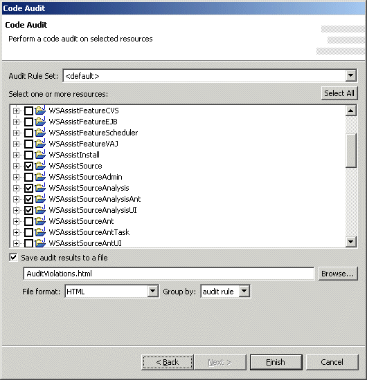

Export Set - Audit CodeNote: this feature requires CodePro AnalytiX and CodePro PlusPak to be installed.  The "Audit Code" wizard page is used to create a code audit Ant task. The default audit rule set may be selected as well as the collection of resources that should be audited. Once the audit results have been collected, the results may either be written out to a report in a variety of formats including text, tab and comma delimited, HTML and XML. The results may also be grouped by audit rule or resource. An codepro.audit Ant task is used to record the options chosen and perform the operation as part of an Export Set. |